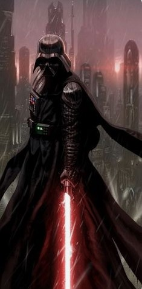
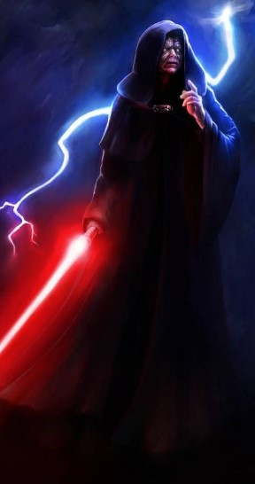

-
Darth Vader #001
- Força 20%
- Sombrio 80%
Darth Vader, nascido como Anakin Skywalker, foi um lendário Cavaleiro Jedai que serviu a República Galáctica durante seus últimos anos, e mais tarde se tornou Darth Vader, um Lorde Negro dos Sith.
-
Mestre Yoda #002
- Força 100%
- Sombrio 0%
Yoda era um lendário Mestre Jedai e mais forte do que a maioria em sua conexão com a Força. Pequeno em tamanho, mas sábio e poderoso, ele treinou Jedi por mais de 800 anos, desempenhando papéis essenciais nas Guerras Clônicas, na instrução de Luke Skywalker e abrindo o caminho para a imortalidade.
-
Obi wan kenobi #003
- Força 80%
- Sombrio 20%
Um lendário Mestre Jedai, Obi-Wan Kenobi era um homem nobre e talentoso nos caminhos da Força. Ele treinou Anakin Skywalker, serviu como general no Exército da República durante as Guerras Clônicas e guiou Luke Skywalker como mentor.
-
Mestre Qui - Gon #004
- Força 80%
- Sombrio 20%
Qui-Gon Jinn era fortemente ligado à Força, e não se pode ignorar a influência poderosa que ela exercia sobre o Jedi. Ele possuía um respeito profundo e permanente por todas as coisas vivas. Era muito harmonizado com a Força e freqüentemente, passava muito tempo meditando e viajando nas profundezas de seus mistérios.
-
Darth Sidious #005
- Força 0%
- Sombrio 199%
Darth Sidious , nascido Sheev Palpatine e também conhecido como Imperador Palpatine , foi um humano Lorde das Trevas dos Sith e Imperador do Império Galáctico , governando de 19 ABY a 4 ABY . Subindo ao poder no Senado Galáctico como senador de Naboo , o misterioso Lorde Sith cultivou duas identidades, Sidious e Palpatine, usando ambas para promover sua carreira política e enganar para alcançar seu objetivo .